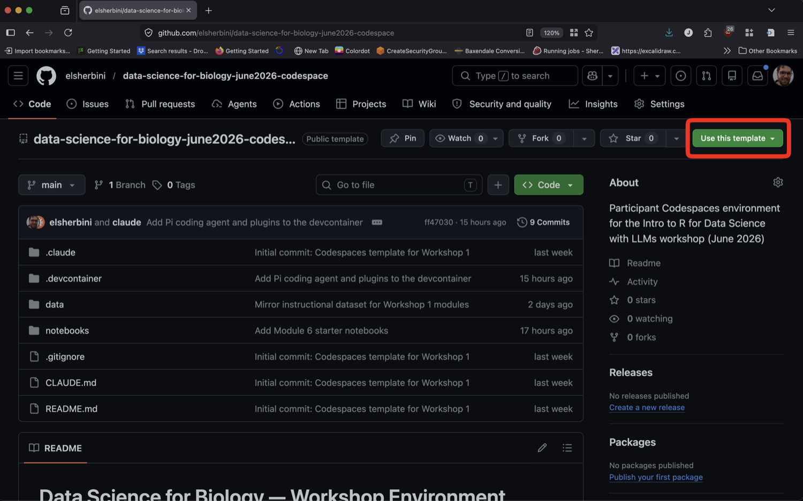
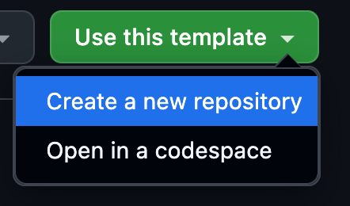
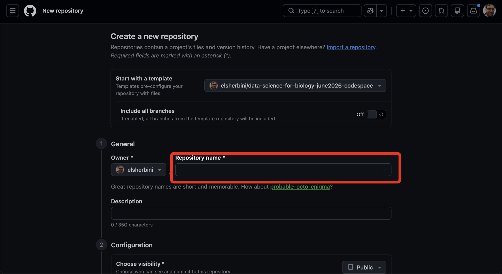
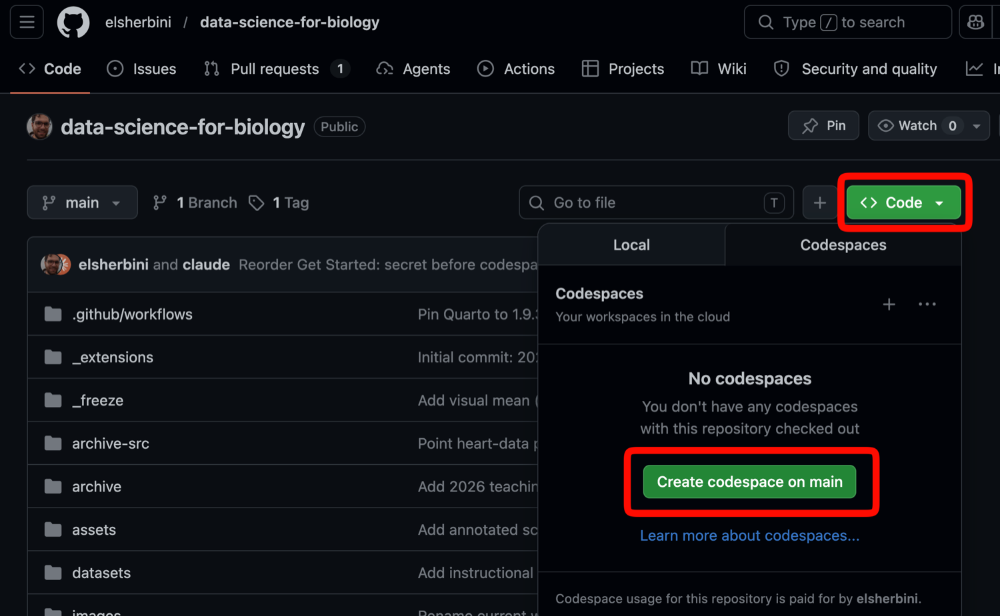
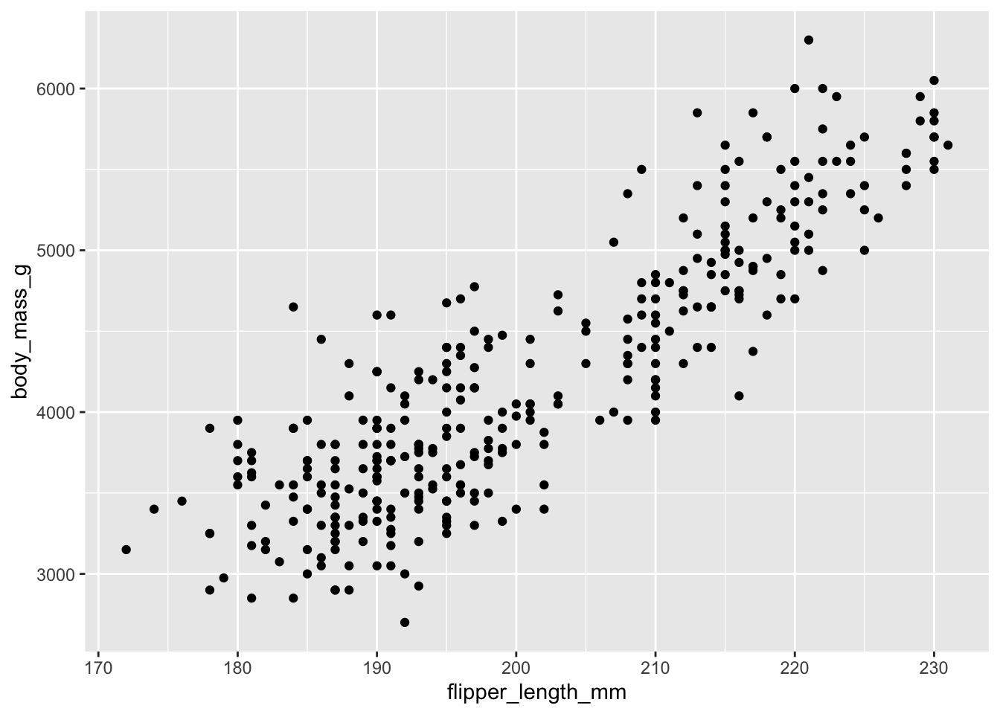
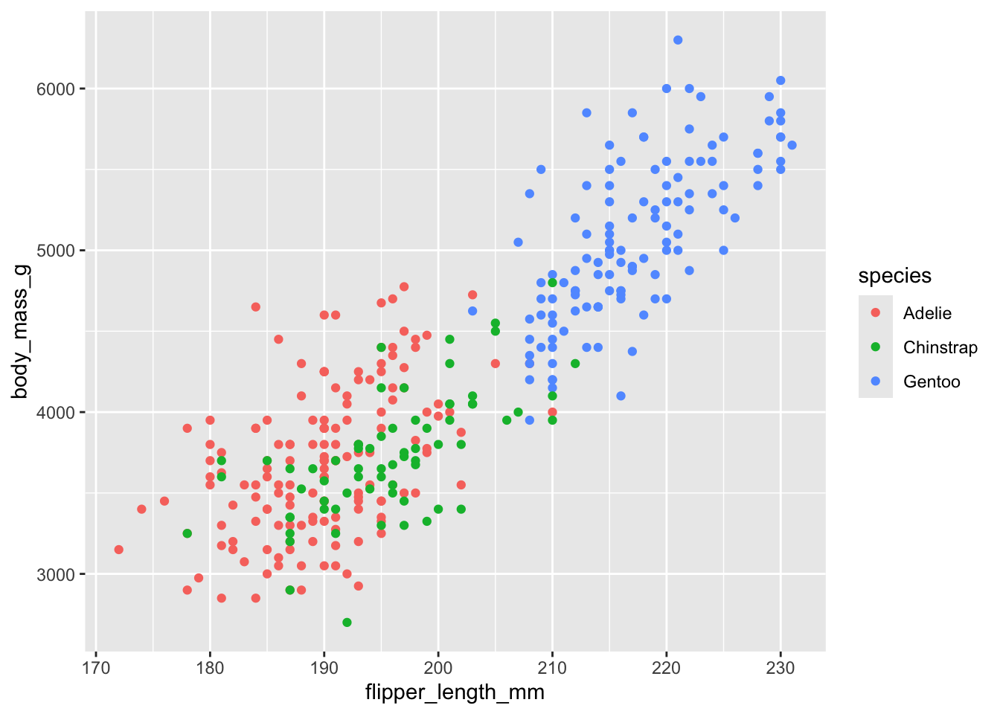
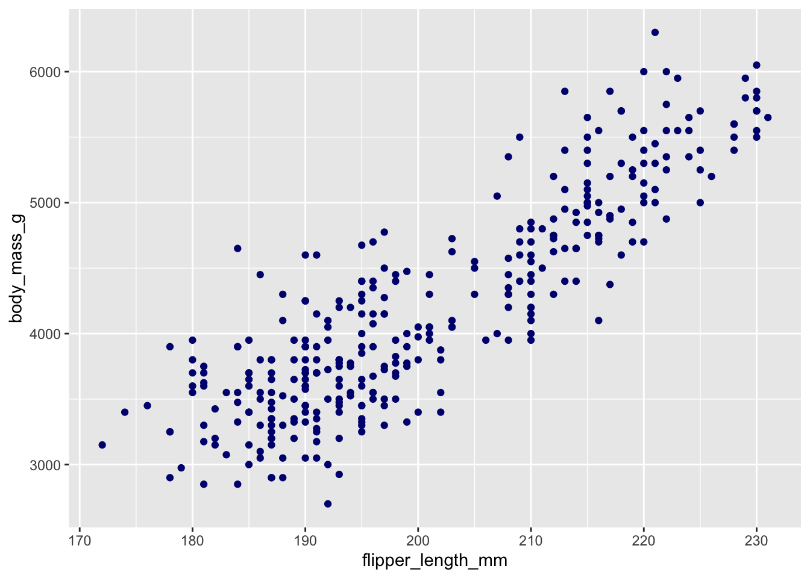
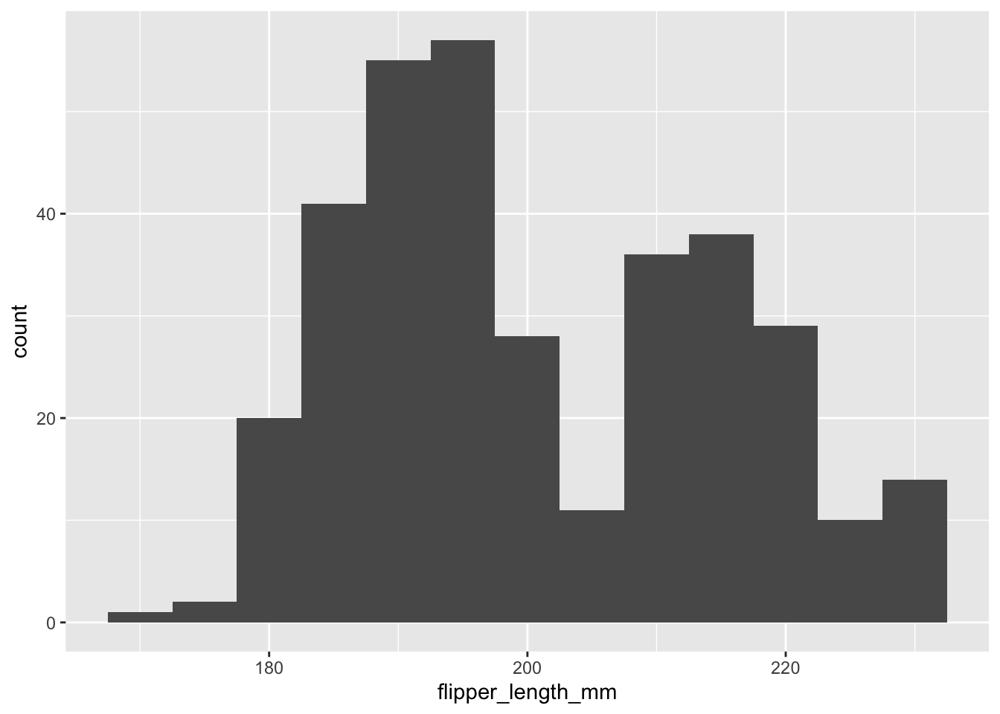
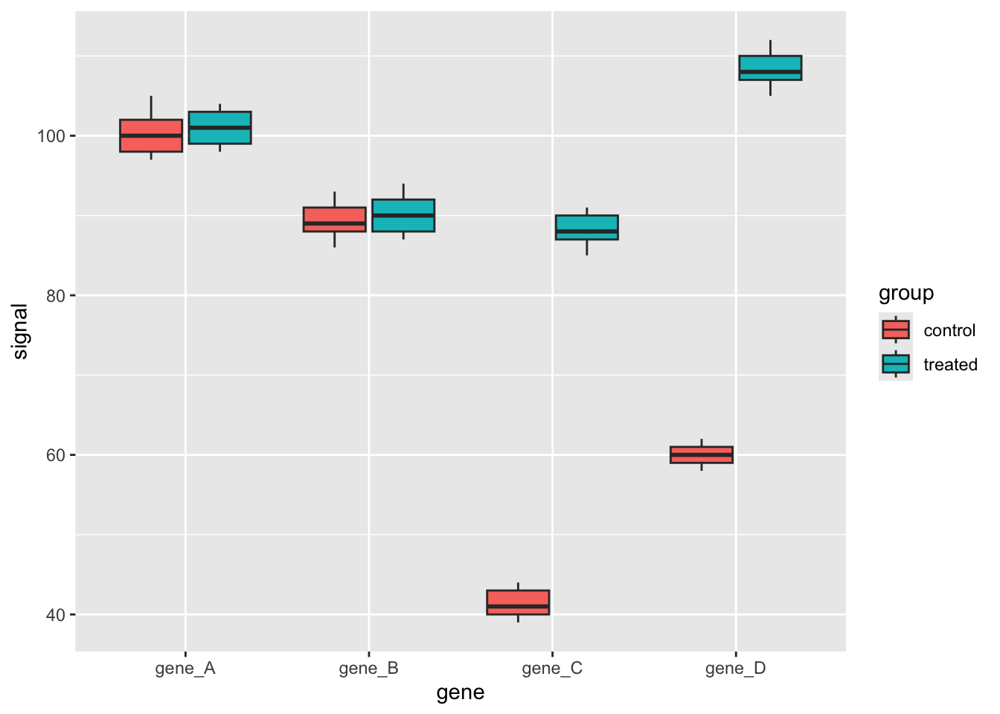

Intro to Data Visualization in R
A 2-hour, hands-on introduction to making plots in R with
ggplot2, using the Palmer Penguins dataset. For RISE 2026 summer researchers — no prior R needed.
Set up your environment
Everything runs in the cloud with GitHub Codespaces — there is nothing to install on your laptop. You only need a web browser and a free GitHub account. No API keys required.
Tip👉 New here? Click to open the step-by-step setup instructions
1. Sign in to GitHub
Go to github.com/login and sign in, or create a free account if you don’t have one.
This matters because GitHub hides the “Use this template” and “Code” buttons from signed-out visitors — if you’re not logged in, the buttons in the next steps won’t appear.
2. Make your own copy of the environment
Open the participant environment repo and click the green “Use this template” button near the top right, then choose “Create a new repository”.

r-tutorial-rise-2026 repo name).
Give the repository a name (for example, rise-data-viz) and click the green “Create repository” button. The owner can stay as your username.

3. Launch your codespace
Go to your new repository’s page. Click the green “Code” button, switch to the “Codespaces” tab, and click “Create codespace on main”.

The first build takes a few minutes while GitHub sets up R, the tidyverse, and Quarto for you. After this first build, reopening the codespace is fast.
4. Open the first notebook
Once the codespace has finished building:
- In the file explorer on the left, open
notebooks/00-hello.qmd. - Click the green play button on the code cell. A penguin chart should appear — that means your environment is working and you are ready.
- When we start the session, open
notebooks/01-visualization.qmdand work through it with the class.
If you get stuck, ask an instructor.
Slides
The datasets
Most of today uses palmerpenguins: measurements of 344 penguins from three species (Adelie, Chinstrap, Gentoo) across three islands. Each row is one penguin; each column is something measured about it (flipper length, body mass, species, island, …).
In the last part we switch to a small plate-reader result — four genes measured in ten samples — to see what real machine data looks like and how to reshape it for plotting.
The session runs in three short cycles of learn a little, then try it:
- Part A — the elements of a plot: geom, mark, mapping
- Part B — distributions: histograms and boxplots
-
Part C — tidy data: reshaping wide machine data with
pivot_longer()
Hands-on worksheet
You’ll do the real work in your Codespace, in
notebooks/01-visualization.qmd. This page lists the tasks. Try each one yourself first — the collapsible “Show an example” boxes are hints to peek at only if you get stuck.
Each task has a number so we can point to it out loud. The first number is the exercise and the second is the task — so 2.3 means “Exercise 2, task 3.”
Exercise 1 — The elements of a plot
Every row in a table becomes one mark on a plot. The geom decides what kind of mark; the mapping (written inside aes()) links a column to a property of the mark. We use the palmerpenguins data.
1.1 — Read a plot. Look at the plot below and answer in your own words: (a) What is the mark? (b) Which column controls x, y, and colour? (c) How many rows of the table made one mark?
TipShow the answer
-
Mark: a dot. Mappings:
flipper_length_mm→ x,body_mass_g→ y,species→ colour. Rows per mark: one row = one dot.
1.2 — Build a scatter. Make a scatter plot of flipper_length_mm (x) against body_mass_g (y) using geom_point().
TipShow an example of a working plot
ggplot(penguins, aes(x = flipper_length_mm, y = body_mass_g)) +
geom_point()
1.3 — Colour by a column. Add color = species inside aes() so each species gets its own colour.
TipShow an example of a working plot
ggplot(penguins, aes(x = flipper_length_mm, y = body_mass_g, color = species)) +
geom_point()
1.4 — Mapping vs. setting. Make all the dots the same fixed colour (say, navy). Does color = "navy" go inside aes() or outside? Why?
TipShow the answer
It goes outside aes(), inside the geom — it’s a fixed value, not a column mapping:
ggplot(penguins, aes(x = flipper_length_mm, y = body_mass_g)) +
geom_point(color = "navy")
1.5 — Change the geom. Compare body mass across species with a boxplot: map species to x, body_mass_g to y, and use geom_boxplot().
TipShow an example of a working plot
ggplot(penguins, aes(x = species, y = body_mass_g, fill = species)) +
geom_boxplot()1.6 — Filter with the pipe. Use |> to keep only one species (your choice), then make a scatter of just those penguins.
TipShow an example of a working plot
penguins |>
filter(species == "Gentoo") |>
ggplot(aes(x = flipper_length_mm, y = body_mass_g)) +
geom_point()Exercise 2 — The shape of one variable
A histogram cuts one numeric column into bins and counts the rows in each. A boxplot is a compact summary, handy for comparing groups.
2.1 — Make a histogram of flipper_length_mm.
TipShow an example of a working plot
ggplot(penguins, aes(x = flipper_length_mm)) +
geom_histogram(binwidth = 5)
2.2 — Change the binwidth. Try binwidth = 2, then binwidth = 20. In a sentence, what happens to the shape? (No new plot to hand in — just look.)
2.3 — Compare groups with a boxplot of body_mass_g for each species.
TipShow an example of a working plot
ggplot(penguins, aes(x = species, y = body_mass_g)) +
geom_boxplot()Exercise 3 — Tidy data: reshape, then plot
Real data often comes off a machine in wide format — one row per sample, with a separate column for each measurement. Here is a small plate-reader result for four genes in ten samples:
# A tibble: 10 × 6
sample group gene_A gene_B gene_C gene_D
<chr> <chr> <dbl> <dbl> <dbl> <dbl>
1 s01 control 102 88 41 59
2 s02 control 98 91 44 62
3 s03 control 105 86 39 58
4 s04 control 100 93 43 61
5 s05 control 97 89 40 60
6 s06 treated 101 90 87 108
7 s07 treated 99 92 91 112
8 s08 treated 104 87 85 105
9 s09 treated 98 94 90 110
10 s10 treated 103 88 88 107In your Codespace you’ll read this from a file with
read_csv("data/qpcr_plate_wide.csv")— same data, straight off the machine.
3.1 — Read the table. What does one row represent, and how many separate measurements are packed into each row?
TipShow the answer
Each row is one sample, and it holds four measurements (gene_A–gene_D). That is wide format — ggplot can’t plot it directly yet.
3.2 — Reshape to long. Use pivot_longer() to stack the four gene columns into a gene column and a signal column.
TipShow an example
plate_long <- plate |>
pivot_longer(gene_A:gene_D, names_to = "gene", values_to = "signal")
plate_long# A tibble: 40 × 4
sample group gene signal
<chr> <chr> <chr> <dbl>
1 s01 control gene_A 102
2 s01 control gene_B 88
3 s01 control gene_C 41
4 s01 control gene_D 59
5 s02 control gene_A 98
6 s02 control gene_B 91
7 s02 control gene_C 44
8 s02 control gene_D 62
9 s03 control gene_A 105
10 s03 control gene_B 86
# ℹ 30 more rows3.3 — Plot it. Make a boxplot of signal by gene, filled by group. Which genes change between the control and treated samples?
TipShow an example of a working plot
ggplot(plate_long, aes(x = gene, y = signal, fill = group)) +
geom_boxplot()